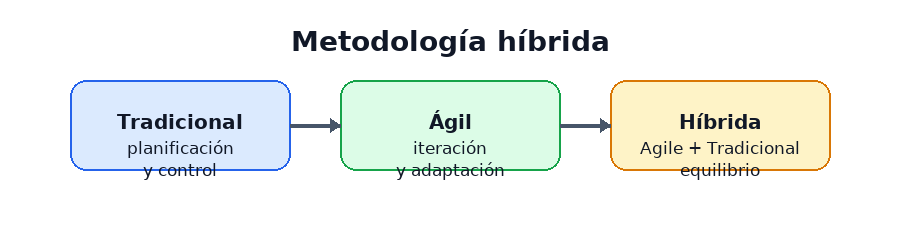
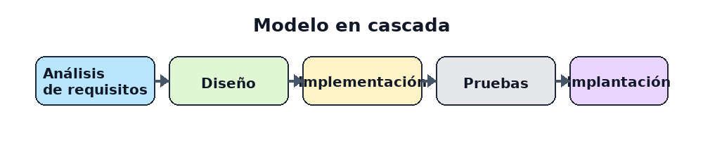
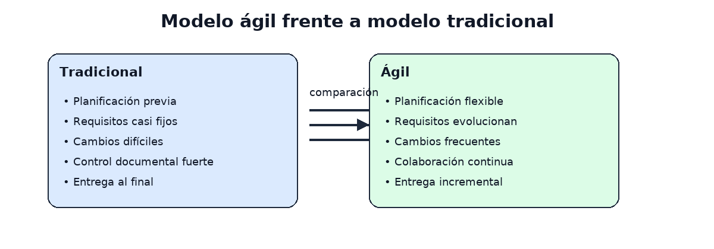

Estudio
de metodologías de gestión de proyectos (ágiles, tradicionales y
híbridas), roles, reuniones, planificación y control del progreso.
1. Introducción
La gestión de proyectos es la disciplina que permite organizar,
coordinar y controlar los recursos, tiempos, riesgos y entregables
necesarios para alcanzar un objetivo concreto. En la práctica, cada
proyecto tiene características distintas y requiere una metodología
apropiada a su contexto, complejidad, incertidumbre y urgencia.

Metodología híbrida: Agile +
Tradicional
A lo largo de la historia, dos grandes enfoques han predominado:
Metodologías tradicionales o predictivas
Metodologías ágiles o adaptativas
Además, en la actualidad muchas organizaciones utilizan modelos
híbridos que combinan elementos de ambos enfoques para equilibrar
planificación, flexibilidad y control.
Equipo trabajando en la gestión de
proyectos
2. Metodologías tradicionales
Las metodologías tradicionales, también llamadas secuenciales o
predictivas, se basan en una planificación inicial exhaustiva y en una
ejecución ordenada de fases. Su punto fuerte es la previsibilidad y el
control de alcance, coste y tiempos cuando los requisitos son conocidos
desde el principio.
2.1. Modelo en cascada
El modelo en cascada divide el proyecto en fases consecutivas y cada
etapa se encadena con la siguiente mediante una secuencia lógica y
progresiva.

Modelo en cascada
Análisis de requisitos
Diseño
Implementación
Pruebas
Implantación y mantenimiento
Cada fase debe completarse antes de pasar a la siguiente. Es útil
cuando el proyecto es estable, el alcance está bien definido y los
cambios son muy costosos.
2.2. Ventajas y limitaciones
Ventajas:
Planificación detallada desde el inicio
Documentación clara y estructurada
Fácil trazabilidad de decisiones
Adecuado para proyectos con requisitos estables
Limitaciones:
Poca flexibilidad ante cambios
Dificultad para responder a requisitos no previstos
Riesgo alto si se detectan errores tarde
El cliente ve resultados solo al final
3. Metodologías ágiles
Las metodologías ágiles surgieron como respuesta a entornos de cambio
constante y alta incertidumbre. Priorizan la entrega incremental, la
colaboración con el cliente y la posibilidad de ajustar el plan durante
el proyecto.
3.1. Principios ágiles
Los principios del enfoque ágil se centran en:
Entregar valor de forma incremental
Responder a cambios en lugar de seguir un plan rígido
Fomentar la comunicación continua
Trabajar con equipos autoorganizados
Revisar y ajustar el producto de forma frecuente
3.2. Scrum
Scrum es una de las metodologías ágiles más utilizadas. Se organiza
en iteraciones llamadas sprints, normalmente de 1 a 4 semanas, y se
centra en entregas funcionales y revisiones periódicas.
En un proyecto de ASIR enfocado en DevOps y SysAdmin, Scrum puede
servir para gestionar tareas como desplegar servicios, automatizar
copias de seguridad, instalar servidores, documentar infraestructura,
corregir incidencias o preparar entornos de pruebas. El equipo no
trabaja solo con código, sino también con configuración, automatización
y mantenimiento de sistemas.
Las herramientas más habituales para coordinar este tipo de trabajo
son Trello y Jira:
Trello: ayuda a visualizar tareas en tableros tipo Kanban, ideal
para asignar trabajos rápidos, incidencias y seguimiento de tareas
diarias.
Jira: es muy útil para gestionar historias de usuario, sprints,
backlog, incidencias y métricas de entrega en equipos con más estructura
de proyecto.
Trabajo colaborativo en una metodología
Scrum
Roles clave en
Scrum y su función principal
Rol
Función principal
Product Owner
Define la prioridad del producto y representa las necesidades del
cliente o del usuario final.
Scrum Master
Facilita el proceso, elimina bloqueos y ayuda al equipo a seguir la
metodología sin perder calidad ni ritmo.
Development Team
Diseña, implementa, prueba y entrega la solución, incluyendo
automatización, despliegues y configuración.
En un proyecto de DevOps/SysAdmin, el Development Team puede incluir
roles concretos como administrador de sistemas, analista de redes,
desarrollador de automatización, responsable de despliegue y soporte
técnico. Aunque la responsabilidad es compartida, cada miembro aporta
especialización distinta al servicio.

Modelo ágil frente a modelo
tradicional
Artefactos principales
Product Backlog: lista priorizada de requisitos y mejoras.
Sprint Backlog: trabajo seleccionado para el sprint.
Increment: resultado usable al final del sprint.
Reuniones clave en Scrum
Sprint Planning: planifica el trabajo del siguiente sprint.
Daily Scrum: reunión breve diaria para sincronizar el equipo.
Sprint Review: se presenta el trabajo realizado y se recibe
feedback.
Sprint Retrospective: análisis de lo que ha funcionado y cómo
mejorar.
3.3. Kanban
Kanban se basa en visualizar el flujo de trabajo mediante un tablero
con columnas como “Por hacer”, “En proceso” y “Hecho”. Se centra en
limitar el trabajo en curso y mejorar el flujo continuo de entrega.
3.4. Ventajas y limitaciones
de Agile
Ventajas:
Flexibilidad ante cambios
Mayor colaboración y adaptabilidad
Entregas frecuentes de valor
Mejora continua
Limitaciones:
Requiere implicación constante del cliente
Puede resultar caótico sin disciplina y gobernanza
No siempre es adecuado para proyectos altamente regulados
4. Metodologías híbridas
Las metodologías híbridas mezclan elementos de planificación
tradicional y enfoques ágiles. Se utilizan cuando el proyecto tiene
parte de requisitos estables y otra parte cambiante, o cuando la
organización necesita control documental junto a entregas
iterativas.
4.1. ¿Cuándo conviene
una metodología híbrida?
Es recomendable en proyectos donde:
Hay regulación o auditoría externa
Existen requisitos fijos y otros emergentes
Se requiere documentación formal, pero también rapidez de
entrega
El equipo necesita combinar gobernanza con innovación
4.2. Ejemplo de enfoque híbrido
Un proyecto puede usar:
una planificación inicial del alcance y presupuesto,
entregas iterativas por sprints,
reuniones de revisión periódicas,
control de riesgos y documentación formal,
y adaptación continua según el feedback del cliente.
5. Roles en la gestión de
proyectos
Aunque cada metodología define roles distintos, algunas funciones son
comunes en casi cualquier proyecto.
5.1. Roles principales
Director/a de proyecto: supervisa objetivos, alcance, cronograma y
riesgos.
Jefe de equipo / coordinador: organiza tareas y recursos del
equipo.
Analista / responsable de requisitos: recoge necesidades y prioriza
funcionalidad.
Desarrollador/a: diseña y construye la solución.
Tester / QA: valida la calidad y la corrección del producto.
Cliente / stakeholder: aporta necesidades, validación y
feedback.
DevOps / SysAdmin: automatiza despliegues, gestiona infraestructura,
monitorización, seguridad y mantenimiento del entorno.
En un proyecto de ASIR con enfoque DevOps y administración de
sistemas, el rol de SysAdmin no es solo “instalar servicios”, sino
también garantizar disponibilidad, escalabilidad, seguridad, copias de
seguridad y recuperación ante fallos. El rol de DevOps conecta
desarrollo e infraestructura para automatizar despliegues y reducir
errores manuales.
5.2. Importancia del papel del
equipo
El éxito de un proyecto depende no solo de la planificación, sino
también de la comunicación, la motivación y la colaboración dentro del
equipo. Los roles deben estar definidos, pero también es necesario
fomentar la cooperación y la responsabilidad compartida.
6. Reuniones y comunicación
Las reuniones son un elemento clave para la coordinación del
proyecto. Su objetivo es facilitar la toma de decisiones, compartir
avances y detectar riesgos a tiempo.
6.1. Tipos de reuniones
Reunión inicial o kickoff: presenta objetivos, alcance,
responsabilidades y cronograma.
Reunión de seguimiento: revisa avances, bloqueos y próximos
pasos.
Reunión de planificación: define tareas, prioridades y plazos.
Reunión de revisión: valida el progreso con el cliente o
stakeholders.
Reunión de retrospectiva: identifica mejoras para el próximo
ciclo.
6.2. Buenas prácticas
Mantener reuniones con objetivos claros
Limitar la duración y el número de asistentes
Registrar decisiones y compromisos
Asegurar la participación de todos los implicados
Documentar riesgos y acciones pendientes
7. Planificación del proyecto
La planificación es la base de la gestión de proyectos. Consiste en
definir qué se hará, quién lo hará, cuándo y con qué recursos.
7.1. Elementos clave de la
planificación
Objetivos y alcance
Tareas y dependencias
Duración estimada
Recursos humanos y materiales
Presupuesto
Riesgos
Calendario y hitos
7.2. Técnicas de planificación
Algunas técnicas habituales son:
Diagrama de Gantt
Diagrama de precedencias o PERT
WBS (Work Breakdown Structure)
Historias de usuario y backlog en metodologías ágiles
Estimaciones por puntos de historia o por tiempos
La planificación debe adaptarse al tipo de proyecto. En entornos
estables, un plan detallado puede ser más útil; en entornos inciertos,
conviene una planificación adaptable y revisable.
Planificación y seguimiento del progreso
en un proyecto
8. Control del progreso
El control del progreso consiste en comparar el plan previsto con la
ejecución real y detectar desviaciones. Es fundamental para corregir
problemas antes de que se conviertan en riesgos graves.
8.1. Indicadores de seguimiento
Avance frente al plan
Tiempo gastado y tiempo previsto
Coste real y coste estimado
Calidad de entregables
Riesgos activos y mitigados
Cumplimiento de hitos
8.2. Herramientas de control
Tableros de seguimiento
Informes de estado
Métricas de productividad
Gráficos de avance
Revisión de riesgos y dependencias
8.3. Corrección de desviaciones
Cuando el proyecto se desvía, es necesario actuar con rapidez:
Repriorizar tareas
Redefinir alcance o tiempos
Asignar más recursos
Reducir riesgos
Comunicar cambios a los stakeholders
9. Comparativa entre
metodologías
Enfoque
Características principales
Cuándo conviene
Tradicional
Planificación previa, fases secuenciales, control fuerte
La elección de la metodología depende del contexto, del nivel de
incertidumbre, de la necesidad de control y de la forma en que el
cliente quiere participar en el proyecto.
10. Conclusión
La gestión de proyectos no se basa en una única fórmula válida para
todos los casos. Cada metodología ofrece ventajas y limitaciones en
función de la naturaleza del trabajo, la complejidad del producto y el
grado de incertidumbre.
Las metodologías tradicionales destacan por su control y
previsibilidad.
Las metodologías ágiles se adaptan mejor a entornos cambiantes.
Las metodologías híbridas buscan equilibrar estructura y
flexibilidad.
En cualquier caso, el éxito del proyecto depende de una buena
comunicación, una planificación adecuada, un liderazgo claro y un
seguimiento constante del progreso. La capacidad de adaptar la
metodología al proyecto es, hoy en día, una competencia esencial para
cualquier profesional de la gestión.
11. Bibliografía recomendada
Agile Manifesto. (2001).
Schwaber, K. y Sutherland, J. (2017). El Guía Scrum.
PMI. (2021). Guía del PMBOK.
Pressman, R. S. (2010). Ingeniería del Software.
Kerzner, H. (2017). Project Management: A Systems Approach to
Planning, Scheduling, and Controlling.
12. Actividad de reflexión
Compara una metodología tradicional y una ágil en un caso práctico
de desarrollo de software.
Explica qué papel tiene el Product Owner y el Scrum Master en un
proyecto Scrum.
Describe cómo se planifica un sprint y qué indicadores permiten
controlar su progreso.
Analiza cuándo es más adecuado un enfoque híbrido en lugar de uno
puro.